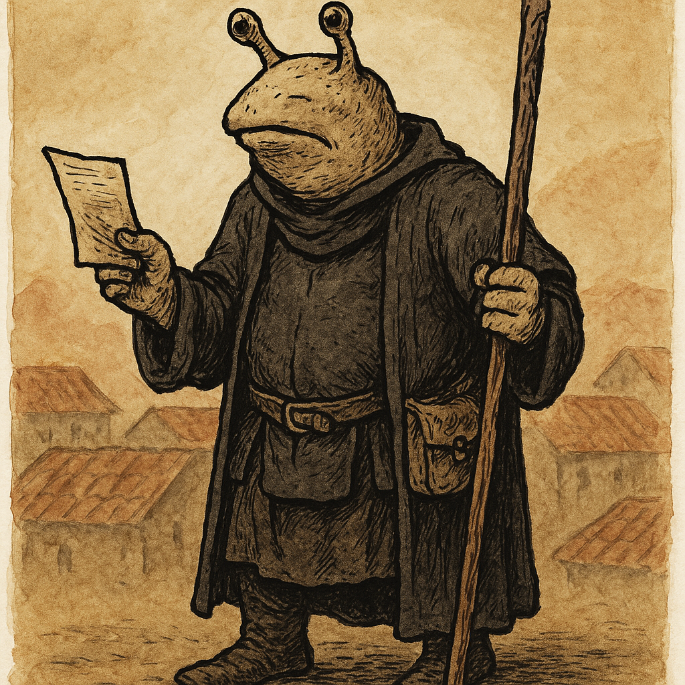
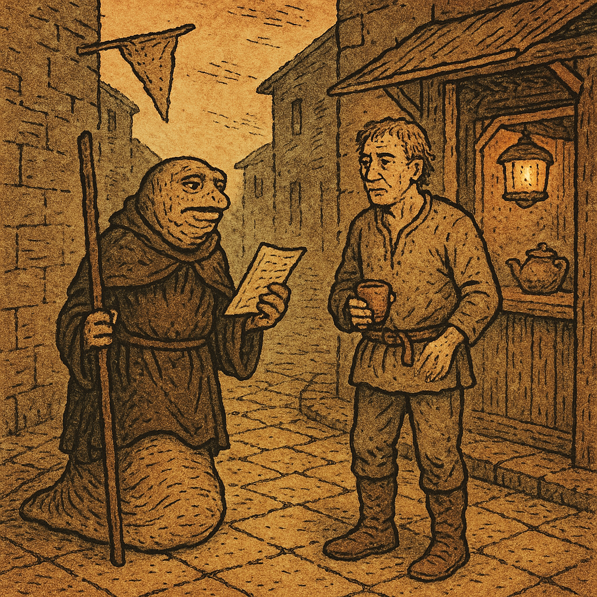
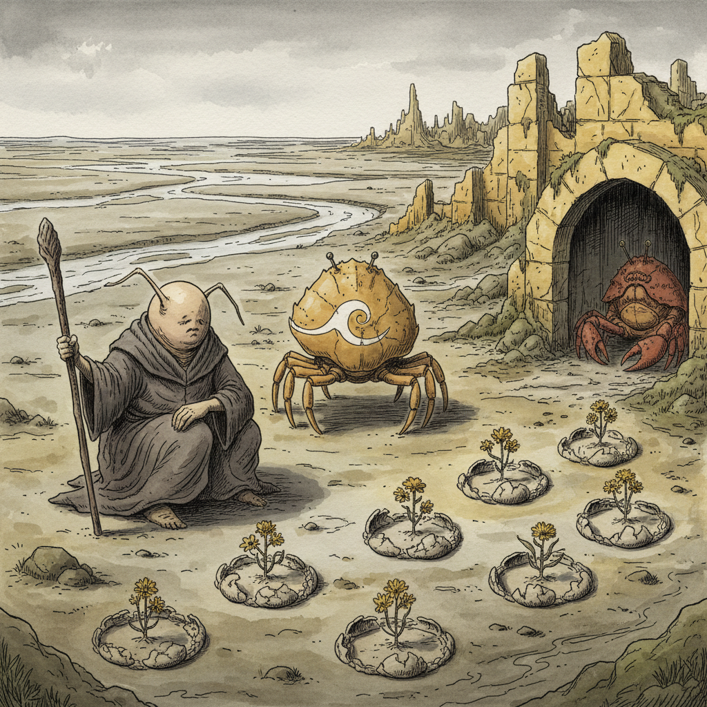

Turn 1 — The Copper Ghetto
Vothrog held a pamphlet-meeting in a dyewright's cellar. 13 attendees. Watch lanterns appeared in the street; 11 fled. Krah-Moh — a free crab-man, attendee #13 — was cornered in the alley below by two constables.
Vothrog descended by rope, wedged his pamphlets in the chimney, walked around the corner posing as a slug-man of standing, bribed the constables 4 gp, and claimed Krah-Moh was a Magistrate's house-servant. The Watch withdrew, filing nothing.
Krah-Moh chose to come north with him.
Turns 2-5 — The Canal Quarter Safehouse
At dawn, the cell assembled in a grain-store room above the canal. Selindi (low-caste human, four languages, the cell's record-keeper). Dov and Pav (ex-dockworker brothers; Pav recruited Hamech). Tuket (old woman, Yellow City native) arriving last, smelling of river mud. Pip (the ulufo, named in Turn 8) asleep on a coil of jute. Plus four unnamed members.
Selindi produced a water-stained note left at the cell's drop point before the meeting — cramped High Tongue from someone who'd learned the script from books. Read four of Vothrog's pamphlets; called the argument "correct but incomplete." Pointed at a single name: Cheth-of-the-Salt-Shore. "Learning what was done to that name would give the argument teeth it currently lacks."
Also surfacing: Hamech — the green recruit — was missing. Probably hiding at the Amber Moth tea house on Vellum Lane. Where Constable Uvaris takes his morning tea every day without fail.
Turns 10-12 — The Ward of the Salt Shore
Vothrog left six pamphlets with Selindi and took Krah-Moh south. Through merchant-quarter fringes, down the God River's west bank, into Old Town — yellow stones growing closer, paths narrowing into gaps between collapsed walls choked with creeper vine. Krah-Moh navigated without hesitation. He had been here before.
At the tidal mark: cracked crab-shells (ventral plates, cupped side up) arranged in loose circles around centerpieces of yellow flowers. A dozen arrangements, 10ft apart along 40 yards. Some fresh, some bleached white by 22 years of tides. Congregations rendered in shell and flower. Krah-Moh touched the mud with one flat claw.
An ancient red-brown crab-man sat in the shadow of a half-collapsed archway, watching.
Turn 12: Vothrog cast Speak Truth to the Wretched (HP 4 → 3). Spoke plainly to the old man through Krah-Moh's click-relay. The old man recognized the white wave-scar on Krah-Moh's shell before any words landed — and twenty-two years of held tension moved.

Turns 8-9 — Cheth-of-the-Salt-Shore
Back at the canal safehouse, Vothrog asked the assembled cell about the name. Tuket sat down her cup. Selindi went still.
"Cheth was not a place. It was a person." — A crab-man, escaped from house-slavery somewhere north, who arrived at the tidal salt-shore flats south of Old Town and preached in the crab-men's own click-language: that the divine spark resides in the shell as much as in the flesh, that a being made property cannot have been made so by any god worth the name.
The Salt Shore Disturbance — Year 22 of the current Oligarchy. Three days. Watch + hired blades. Official record: 11 dead, agitators dispersed. "It wasn't an insurrection," Tuket said. "It was a congregation. They prayed."
Cheth was taken — not killed, but specifically removed. The salt-shore workers still leave waiting offerings at the tidal mark on the dark of the moon. Krah-Moh had gone completely still through Tuket's whole account.
Selindi wrote out two leads: the Cartulary of the Three Bells (merchant-quarter private archive, holds excised material) and the Ward of the Salt Quarter (Old Town, living witnesses).

Turns 13-15 — Veth-Cheth
Vothrog examined the wave-mark with scholar's eyes. Three things surfaced from memory:
- The tidal-mark offerings are cupped shells — vessels, meant to hold.
- In pre-Oligarchy High Tongue theological texts, the word veth-cheth means "the wave that carries" — used in exactly one context: the transmission of divine truth from one body to another.
- The old man recognized the mark before Krah-Moh spoke a single word.
Krah-Moh's wave-scar is not tribal. It is a giving mark — veth-cheth — and it can only be given by someone carrying the tradition of Cheth's congregation.
When Vothrog asked, by gesture, whether the mark and the offerings were the same thing — the old man rose, walked to Krah-Moh, touched the wave-scar with one claw-tip, and clicked a long deliberate phrase. Krah-Moh relayed it in two gestures: claws pressed to his own shell, opened outward — Given to me. Right claw arcing from south-and-east, curling back — From far away. Coming back.
The old man hasn't seen this mark on a living shell since before the Disturbance. Only one person gave it in those years. Krah-Moh's shell is still healing at the edges — the mark is recent.
Cheth is alive. Somewhere south-and-east. And Krah-Moh came from that direction.
Chronicle: Whitehack / Yoon-Suin / Echo Resounding
The Player Character
Vothrog was a slug-man heretic-scholar operating at Level 1 with 0 XP. His attributes were STR 9, DEX 10, CON 11, INT 13, WIS 15, and CHA 13. He belonged to three groups: Heretic-Scholar as his vocation, Slug-Man as his species, and the Congregation of the Unwashed as his affiliation. He held one miracle slot with “Speak Truth to the Wretched” active and “Bind the Spirit of Oppression” and “The Poor Shall Inherit” inactive; after the night’s rest the miracle slot was open again, with the choice of which working to carry south still before him. He carried a quarterstaff, leather armor worn beneath plain traveling robes, six pamphlets (“The Slime-Lords Drink What the Wretched Weep”), a writing kit, two weeks of trail rations for three, refilled waterskins, extra torches, river-cord, and fifty feet of hemp rope. He had 49 gold pieces remaining, the rest spent outfitting himself and two companions for the road south. His HP stood at 4 of 4, fully restored by a night’s rest. He spoke Common, the Slug-Men High Tongue, and Low Caste Argot, and held a +2 saving throw bonus against magic and mind effects, healing at twice the normal rate.
The Story So Far
Vothrog ran a secret congregation meeting in the Copper Ghetto before dawn. Twelve attendees scattered when Watch lanterns appeared in the alley below; a thirteenth, a free crab-man named Krah-Moh, was cornered by two constables and could not run. Vothrog descended from the dyewright’s rooftop where the meeting had been held, secured his pamphlets in a chimney gap, and intercepted the Watch as a slug-man of apparent standing. He claimed Krah-Moh was a Magistrate’s house-servant whose collar had been left at home, paid four gold pieces for the inconvenience, and walked away with Krah-Moh free. He then climbed back for the pamphlets and rope, and the two men moved north together toward the canal quarter, Krah-Moh navigating the back routes from memory.
At the canal quarter safe house, Vothrog introduced Krah-Moh to the waiting cell members and persuaded them to accept him. Selindi gave a status report: six of eleven fled members were safe in nearby houses; three were unaccounted for, of whom the old woman Tuket and an ulufo called Pip were expected to be fine; the third, Hamech, was a new recruit on only his second meeting who knew no safe-house protocols and had seen Vothrog’s face. Selindi also produced a water-stained paper left at the cell’s drop point before the meeting. The note was written in the High Tongue by someone who had clearly learned the script rather than been raised in it. It cited the pamphlets as correct but incomplete, and named a single lead: Cheth-of-the-Salt-Shore, with the instruction to find what had been done to that name.
Vothrog recognized that Hamech was likely sheltering at the Amber Moth tea house on Vellum Lane, a place he habitually used when frightened. Selindi revealed that Constable Uvaris of the Watch took his morning tea there every day without exception. Vothrog took Pav and Krah-Moh to the tea house at first light, arrived ahead of Uvaris, and sent Pav inside to extract Hamech while positioning himself to intercept the constable at the door. He engaged Uvaris directly, asking whether a man who enforced the movement ordinances against the poor slept well at night, and held the constable’s attention long enough for Pav and Hamech to leave unseen. Uvaris did not see them go but would remember a slug-man in plain robes who had addressed him with that specific question.
Back at the safe house with Hamech in tow, Vothrog introduced himself plainly to Hamech and corrected his behavior — familiar haunts were exactly where not to go when things broke apart. He then asked the assembled cell whether anyone knew the name Cheth-of-the-Salt-Shore. Tuket and Selindi both reacted. Tuket described Cheth as a formerly enslaved crab-man who had escaped, arrived at the tidal salt flats south of Old Town, and preached the divine spark in the crab-men’s own tongue, drawing human debt-workers into his congregation as well. His central claim had been that a being made property could not have been made so by any god worth the name. The Salt Shore Disturbance had occurred roughly twenty-two years earlier; the official record counted eleven dead and described it as a labor insurrection. Selindi noted eleven was a suspiciously small number for three days of confrontation. Cheth was absent from the official record entirely — not listed among the dead but taken deliberately, by men who knew who they were looking for. The salt-shore workers still left cracked shells and yellow flowers at the tidal mark on dark moon nights, and Tuket called them waiting offerings rather than mourning offerings. Krah-Moh had gone completely still during this account.
Vothrog extracted two leads from Selindi: the Cartulary of the Three Bells in the merchant quarter, a private archive that held material the Oligarchy’s public records had quietly excised, and the Ward of the Salt Quarter in Old Town, where living witnesses to the Disturbance might still be found. He left six pamphlets with Selindi for distribution, instructed the cell to proselytize and assist the needy while he was gone, and departed south with Krah-Moh.
Krah-Moh navigated the approach to Old Town without hesitation, using routes that suggested he knew the ward personally. At the tidal mark, Vothrog found the offerings exactly as described — crab shells arranged in congregation-circles, cupped side up, with yellow marigold-analogues at their centers, the line running forty yards along the waterline in various stages of age and weathering. Krah-Moh lowered himself and touched the mud at the mark with a flat claw, a gesture that read as reverence. An ancient red-brown crab-man sat in the shadow of a collapsed archway twenty feet back, watching. His reaction roll suggested he was neutral but willing to be approached.
Vothrog cast “Speak Truth to the Wretched,” spending one HP, and spoke plainly: that Cheth had said what was true, that the slug-lords’ heaven was a story to justify the slug-lords’ earth, that he himself was not Cheth but believed what Cheth had believed, and that he was not going away. Krah-Moh relayed this in crab-click language to the old man, who rose from his crouch, walked to the oldest offering on the line, touched it with a flat claw, and then looked at Vothrog directly for the first time. He clicked a single short phrase. Krah-Moh raised his open claw in a relay-ready gesture.
Vothrog examined the wave-scar on Krah-Moh’s left shell closely. His INT check surfaced a connection to the High Tongue term veth-cheth — “the wave that carries” — used in pre-Oligarchy theological texts in exactly one context: the transmission of divine truth between vessels, the spark jumping the gap between bodies. The old man had recognized the mark before Krah-Moh had spoken a word, suggesting the mark carried specific meaning known to anyone connected with Cheth’s congregation.
Through gesture, Vothrog asked whether Krah-Moh and the offerings tradition were connected. The old man rose, walked to Krah-Moh, and touched the edge of the wave-scar with a single claw-tip, then clicked a longer reply. Krah-Moh relayed it in gesture: both claws pressed flat against his own shell, then opened outward — the mark was given to him — and then his right claw tracing an arc from far away and south toward himself — from a distance, coming back. The old man’s posture told Vothrog the rest: the veth-cheth giving mark could only be conferred by someone who carried the tradition of Cheth’s congregation, the old man had not seen it on a living shell since before the Disturbance, and the only person who had given it in those years was Cheth himself. Krah-Moh’s scar was recent — the shell still healing at the edges. Cheth appeared to be alive, somewhere distant, and Krah-Moh had come from that direction and been marked.
Vothrog acknowledged the old crab-man with a wordless bow — both hands pressed flat to his chest, held, then opened outward — and turned north with Krah-Moh at his shoulder. At the canal-quarter safe house he told the reassembled cell everything: the tidal offerings, the old man, the veth-cheth wave-mark, and the conclusion that Cheth-of-the-Salt-Shore was alive. He named the Cartulary of the Three Bells as the next line of inquiry and sent Selindi and Tuket to it — Selindi to read the record, Tuket to read the silences in it — charged with finding who had ordered Cheth taken and what the Oligarchy’s archive had excised. Dov was left to hold the safe house, Hamech to continue protocol training under him, the remainder to pamphlet distribution. Vothrog slept the night through and woke fully restored, and turned over whether to carry “Speak Truth to the Wretched” south or prepare a different working. In the morning he provisioned at the merchant-quarter market fringe — two weeks of rations for three, refilled waterskins, river-cord, extra torches, twenty-seven gold pieces spent and forty-nine kept — and set the idea of a pack animal aside, the river-paths and coastal terrain south being no place for a mule. At a tea-stall by the river-steps he found, rather than sought, a possible henchman: a low-caste human woman with a quarter-staff and a circle-of-shells tattoo on her forearm, salt-shore by heritage through a grandmother who had been there before the Disturbance. She recognized the wave-scar on Krah-Moh’s shell, and offered to carry the pack and watch their backs — on one condition: an honest answer to whether Vothrog truly knows what he is walking into.
The Current Situation
Vothrog stands at the merchant-quarter river-steps in the clear yellow morning, rested and provisioned — full health, forty-nine gold pieces, two weeks of supplies for three. Krah-Moh waits to lead him south, toward the open water and the direction his own marking came from; Pav, who asked a night to decide, has chosen to come. Selindi and Tuket are already moving on the Cartulary of the Three Bells, to dig the Salt Shore Disturbance out of the Oligarchy’s record. Three things hold Vothrog at the river-steps before he goes: the salt-shore woman’s question — whether he knows what he is walking into, which she will not travel without an answer to; the choice of which miracle to carry south; and the question of what he will say to Cheth-of-the-Salt-Shore if the road actually reaches him. His face remains logged by Constable Uvaris.
NPCs, Factions, and Places
Krah-Moh — free crab-man, ochre shell, old work-scars, white wave-scar on left shell (veth-cheth, a giving mark, conferring by Cheth himself and recently received); Vothrog’s traveling companion; no Common; navigates Old Town from memory; was apparently sent or marked by Cheth and came from his direction. Loyal and present.
Selindi — human woman, low caste, cell recorder, speaks four languages; runs the safe house in Vothrog’s absence; pragmatic and competent. Cell ally.
Dov and Pav — ex-dockworker brothers, burn-scarred forearms; cell members; Pav knew Hamech and helped extract him. Cell allies.
Hamech — human dockworker, low-merchant caste; new recruit, second meeting; extracted from Amber Moth; corrected on protocol; knows Vothrog’s face and species. Currently oriented and present at the safe house. Weak link.
Tuket — old human woman, Yellow City native; attended the meeting, escaped undetected; holds significant personal memory of the Disturbance and of Cheth; gave Vothrog a low-caste blessing on departure. Cell elder, informally.
Pip — ulufo; cell member; absent but reliable; currently sleeping at the safe house on a coil of jute.
The unnamed old crab-man — ancient red-brown shell, twenty-two years tending the tidal mark offerings; recognized Krah-Moh’s giving mark; shifted from neutral to fragile ally after learning Cheth may be alive.
Uvaris — Watch constable, spice-factor quarter; off-duty but thorough; takes morning tea at the Amber Moth daily; did not see Hamech extracted but will remember a slug-man in plain robes who asked if he sleeps well on Vellum Lane. A face logged against Vothrog.
The salt-shore woman — low-caste human, quarter-staff, calloused hands, a circle-of-shells tattoo on her left forearm; salt-shore by heritage through a grandmother who was there before the Disturbance. Found at a river-steps tea-stall as Vothrog provisioned; recognized Krah-Moh’s veth-cheth mark on sight. Has offered to travel as henchman — carry the pack, watch their backs — but will not commit until Vothrog answers, honestly, whether he knows what he is walking into. Standard rate roughly 3 gp a week and keep.
Cheth-of-the-Salt-Shore — formerly enslaved crab-man; escaped, came south on the God River; preached the divine spark in the crab-men’s tongue; founded a congregation among the tidal salt-flat workers; apparently divine or saint-like in the workers’ tradition; taken (not killed) in the Salt Shore Disturbance twenty-two years ago; apparently alive and somewhere distant; the pivot of the campaign’s emerging arc.
The anonymous letter writer — unknown; writes the High Tongue in a learned hand, not a slug-man; has read at least four of Vothrog’s pamphlets; knew of Cheth and directed Vothrog to investigate what was done to that name; signed nothing. Motive unknown.
The Congregation of the Unwashed — Vothrog’s cell and affiliation; eleven human and ulufo members plus Krah-Moh; based in the canal quarter safe house; currently proselytizing and distributing pamphlets under Selindi’s management.
Campaign arc — the road south
flowchart LR A["Copper Ghetto<br/>meeting raided (Turn 01)"] --> B["Canal Quarter<br/>safe house (Turn 04)"] B --> C["Vellum Lane<br/>extract Hamech (Turn 07)"] C --> D["Who is Cheth?<br/>(Turn 08-09)"] D --> E["Tidal Mark<br/>old crab-man (Turn 12-15)"] E --> F["Cheth is alive, distant<br/>Road South begins (Turn 16)"]
From the Copper Ghetto raid to the recognition at the Tidal Mark.
What’s next: find Cheth.
See also
For the structured per-character + per-location views:
- Characters index — one note per named NPC, grouped by faction, with a relationship diagram.
- Locations index — one note per named place, with a geography hierarchy.
- Adventure Log — the chronological per-turn play record.
- The Salt Shore Disturbance — the event that shaped the southern landscape.
The Yellow City, Copper Ghetto — where the meeting was held and the night’s trouble began.
The Canal Quarter safe house — Vothrog’s base of operations; the cell’s current refuge.
The Amber Moth tea house, Vellum Lane — Uvaris’s morning haunt; no longer safe for Hamech.
The Cartulary of the Three Bells, merchant quarter — private archive holding excised historical material; not sympathizers but archivists; an unexplored lead on the Disturbance.
The Ward of the Salt Shore, Old Town — current location; ruined quarter where the salt-flat workers once congregated; the tidal mark with its twenty-two years of waiting offerings; living witnesses including the unnamed old crab-man.
Open Threads
Cheth appears to be alive somewhere distant, and Krah-Moh carries his mark and came from that direction — where he is and what he wants are unresolved and central, and the road south is now Vothrog’s attempt to close that distance. Selindi and Tuket are at the Cartulary of the Three Bells, which may hold what the official record excised about the Salt Shore Disturbance and who ordered Cheth taken; what they recover is still to come. The salt-shore woman at the river-steps has offered to travel as henchman but will not commit until Vothrog answers, honestly, whether he knows what lies ahead. Vothrog has a miracle to choose before he leaves. The anonymous letter writer who pointed him toward Cheth has still not identified themselves or made further contact. Uvaris has logged Vothrog’s face and will know him again. Hamech remains the cell’s most vulnerable member. Six pamphlets are in circulation in the Yellow City and six remain with Selindi. And Krah-Moh has not yet said directly what he knows of Cheth’s whereabouts or the circumstances of his own marking — that conversation has not happened.
Whitehack/Yoon-Suin/Echo Resounding — Adventure Log
A solo Whitehack campaign, played in mission-companion.
This is the full play record. Each ❖ Turn below is one session: a
short scene with the GM, dice rolled in the open, decisions made in
plain English. The running summary lives in Chronicle.
Turns
- Turn 01 — Character creation; the Copper Ghetto meeting raided; lanterns in the alley.
- Turn 02 — Down to street level; bribing the Watch to free Krah-Moh.
- Turn 03 — Recovering the rope and pamphlets; leaving the rooftop with Krah.
- Turn 04 — The Canal Quarter at dawn; the cell hears the anonymous note about Cheth.
- Turn 05 — Reading the note; surfacing Hamech’s last known whereabouts.
- Turn 06 — Vellum Lane at first light; with Pav and Krah to the Amber Moth.
- Turn 07 — Engaging Uvaris at the door while Pav extracts Hamech.
- Turn 08 — Back at the safe house; “has anyone heard of Cheth-of-the-Salt-Shore?”
- Turn 09 — Tuket and Selindi answer; preparing to depart with Krah-Moh.
- Turn 10 — South to the Ward of the Salt Quarter; the tidal mark in yellow morning.
- Turn 11 — (OOC) Character-sheet check; pause before the miracle.
- Turn 12 — “Speak Truth to the Wretched” cast; the old crab-man hears it through Krah.
- Turn 13 — Reading the veth-cheth wave-mark on Krah-Moh’s shell.
- Turn 14 — (OOC) What “the relay is open” means.
- Turn 15 — The question through the relay; the old man’s answer; Cheth alive, distant.
- Turn 16 — Back to the cell; Selindi and Tuket sent to the Cartulary; a night’s rest, provisioning, and a possible henchman for the road south.
How to read
If you’re new: skim Chronicle first (10 minutes), then dive into
the turns from the beginning for the texture and dice.
If you want the structured view of who’s who: see the
Characters index and
Locations index.
What ”❖ Turn N” means
A turn in this campaign is one back-and-forth session with the
LLM-GM running inside mission-companion’s RPG mode. The dice rolled
are real — the GM rolls them transparently in code, prints the
numbers, then narrates the consequences. A turn is short by design
(one decision and its outcome), so the chronicle can grow without
anyone needing to keep the whole campaign in their head.
TABLE WITHOUT ID
file.link as "Turn",
file.size as "Size (chars)"
FROM "Turns"
WHERE type = "turn"
SORT turn ASC(The Dataview table above renders inside Obsidian. On the published
site the static list above is the canonical navigation.)
Open Threads
- Cheth — alive, location unknown, somewhere south-and-east of the Yellow City. Krah-Moh apparently sent or marked by him.
- The Anonymous Reader — left the High Tongue note; learned the script from books; has at least four of Vothrog's pamphlets; likely already knew Cheth was alive. No way to contact yet.
- The Cartulary of the Three Bells — unexplored merchant-quarter archive; may hold what the Oligarchy buried about the Disturbance.
- Constable Uvaris — face logged. He'll think on Vellum Lane.
- Krah-Moh's shell still healing — Cheth marked him recently.
- Six pamphlets in circulation — moving through docks and ghettos. Consequences unpredictable.
- The cover story — Vothrog claimed "Magistrate Uven's household." There is no such arrangement. If anyone checks, it points somewhere.
Turns 6-8 — The Amber Moth
Vothrog took Pav and Krah-Moh to Vellum Lane at first light. They arrived ahead of Uvaris. Hamech was at the far-left back table, head down, unaware.
Turn 7: Pav slid into the Amber Moth and quietly drew Hamech out the side. Vothrog intercepted Uvaris on the lane: "Do you sleep well?" — a genuine theological question to a man on his way to his morning tea. Uvaris paused, looked, listened, walked into his tea, did not see the extraction. He will remember the slug-man.
Turn 8 walk back: Vothrog corrected Hamech on protocol in a stripped-down voice. "You are not in trouble with me. You are alive. But you need to understand what almost happened." Hamech filed it away.
Yellow City — Yoon-Suin
Year of the Wandering Crane · Whitehack solo campaign
The Purple Land. Slug-men noble castes. Caste-locked god-emperors. Opium flooding the poor quarters. Vothrog the Wise — a slug-man Heretic-Scholar of the Congregation of the Unwashed, distributing handwritten pamphlets and running secret meetings underground.